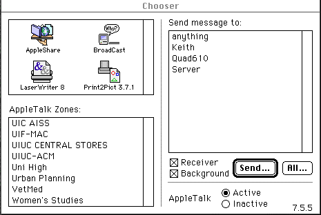
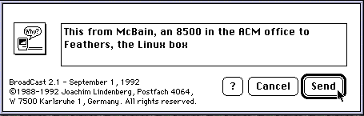
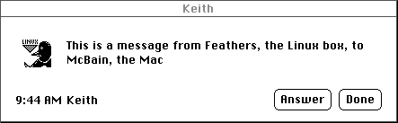
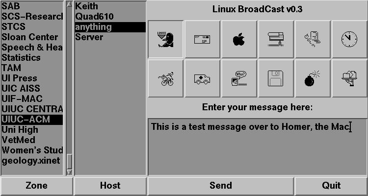
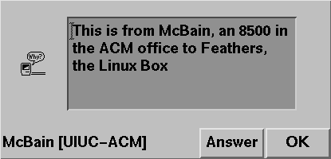

Broadcast for Linux
Okay, the title is a bit of a misnomer because in theory this should
work under solaris as well, but I haven't tested that theory yet.
Broadcast for Linux is a project to recreate the chooser extention
Broadcast from the Macintosh and to be fully compatable with that.
The Broadcast extention works a lot like UNIX's write command,
but it sends the message and an icon over the AppleTalk network to the
receiving host.
We used the ddp packet layer that was available in Linux's kernel along
with Netatalk version
1.3.3 for the AppleTalk networking. Motif was used for the X interface.
The packet format Broadcast was expecting was derived from a very old
document we found about Broadcast.
Apple's Version
On the Mac the user interface is built of three things: the chooser screen,
the "send-message" dialog and the "message-received" dialog.

The chooser screen has the main disadvantage of being in the Chooser.
It is a royal pain in the tookus to open up the chooser each time you want to
send someone a message. However, from this box, you select the AppleTalk
Zone where the person you want to send the message to lives and then his
or her name from the box at the right. Also in this box this gives you
the opportunity to select wether you will receive messages or not and
if any incoming messages will appear in the forground or quietly appear
in the background. Most people keep it set in background mode.

After selecting who the message will go to the "send-message" dialog
box will appear. In this you get to select the icon you want to send,
as well as enter your text.

The message box is what is displayed with an incoming message. As you
can see this one was in the background when the screen shot was taken.
The icon is shown along with the message. We have send the Linux
Broadcast icon for this demo shot to show that the icons are actually
being sent across the network.
Our Version
Our version is trying to recreate all the functionality of the Mac and
to be fully compatable. We're almost at the goal.

We've combined the functionality of the chooser screen and the
send-message box into one.

Our message box is about the same as the Macs, just a little cosmetic
difference.
Bugs left to work out.
- Make Answer button on Mac work. I.E. Send and receive off same
port.
- Make Answer button on Linux work. I.E. write some code for
the button, none currently exists.
- Figure out why a particular mac lap top will always cause our
receiving code to lock up.
- Rewrite the receive code from the netatalk library so it is
nonblocking
Features to add
- Make icon selection more like a Mac so custom icons can be added
- Ignore all messages that have "Marathon" in them ;)
Source and binaries
The source to bcast is available here.
Misc. Awards
3rd place in the Cutting Edge catagory at EOH
Contributiong Programmers:
Jason Luther,
Brian Swetland,
Tony Stuckey,
Chris Stamborski,
Keith Garner
Macintosh Consultant:
Steve Bytnar
Maintainer: Keith Garner